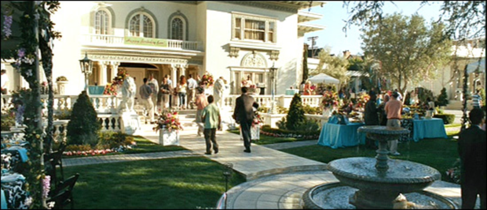
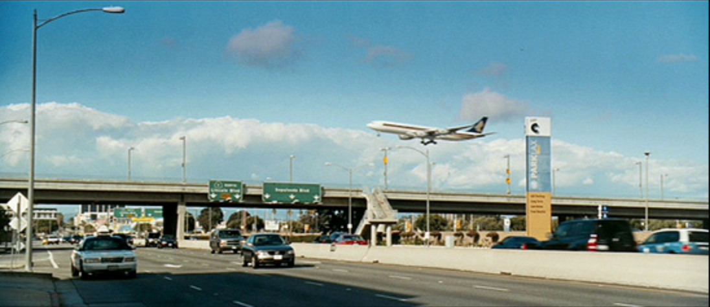
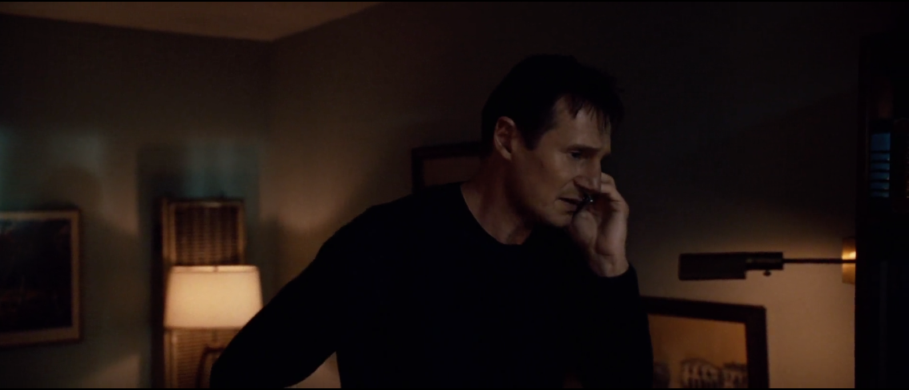
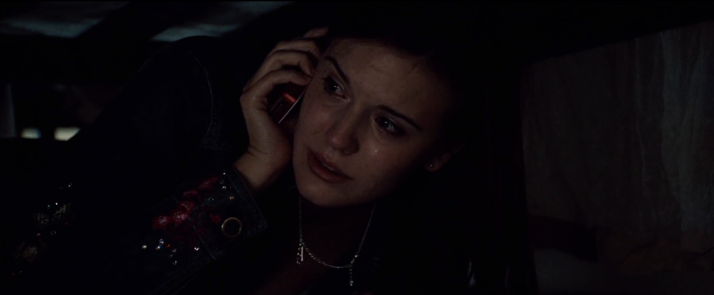
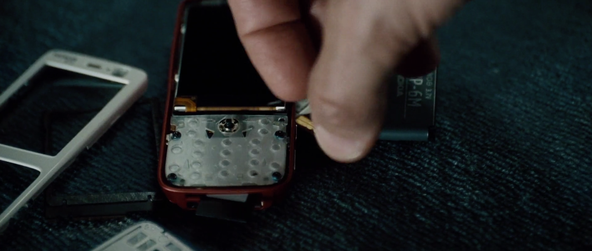
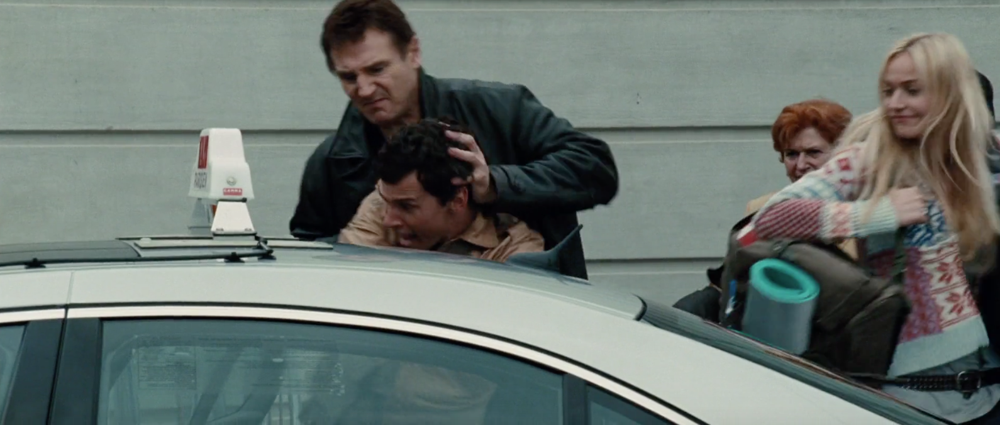
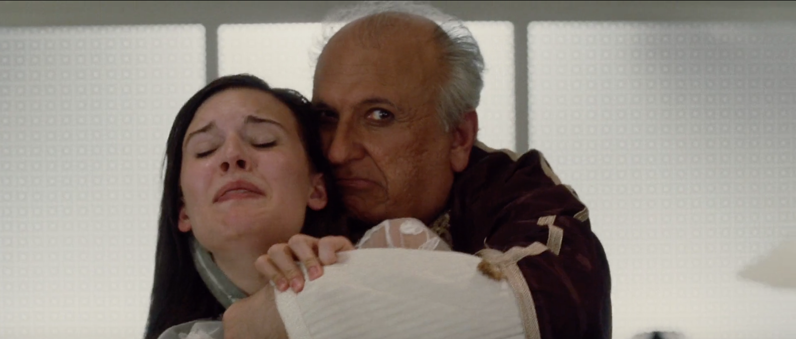
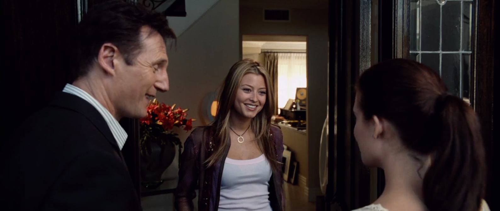

LOS ANGELES
Bryan fejre hans datter Kims 17 års fødselsdag. Kim vil gerne til Paris med hendes veninde Amanda, men Bryan er lidt skeptisk, men ønsker at: 1) Bryan skal køre Kim til lufthavnen. 2) Kim skal ringe til Bryan når hun lander i Paris. 3) Kim skal ringe til Bryan hver aften for at fortælle ham adressen på en nye placeringer hun er og hvor hun vil sove om natten.
PARIS LUFTHAVN
Kim og Amanda ankommer til Paris. De skal fra lufthavnen og ud til den lejlighed som Amandas fætter har, men har en i Spanien, så pigerne er selv i lejligheden. De venter derfor på en taxa, og mens de venter møder de to piger en ung fyr ved navn Peter, han forslår at de deler en taxa, og det siger pigerne ja tak til. Mens de venter sammen med Peter, får de ham til at tage et billede af pigerne.
LEJLIGHEDEN I PARIS
Da de kommer til lejligheden, tilbyder Peter dem at komme med til en fest i aften og det siger Amanda hurtig ja tak til. Lige da pigerne stiger ud af bilen, ringer Peter til en og siger ” to piger, omkring 18 år, og andressen til lejligheden.
Pigerne kommer op i lejligheden og sætter hurtigt højt musik på og danser rundt.
LOS ANGELES
På den anden side i Los Angeles, ser Bryan at Kim og Amandas fly er landet i Paris, men han har ikke modtaget noget opkald fra Kim, så derfor forsøger han at ringe flere gang til hende uden held, men efter flere forsøgt får Bryan fat i Kim.
LEJLIGHEDEN I PARIS
Kim går ind i et andet rum, for at komme væk fra den høje musik. Mens de snakker kan Kim se Amandag gennem vinduet, at der er to mænd der tager Amanda, og bager hende væk. Kim fortæller hendes far hvad der var hun lige så, der skete med Amanda. Bryan fortæller hurtigt at Kim skal gå ind i soveværelset og gemme sig under sengen. Kim fortæller hendes far omkring mødet med Peter. Bryan fortæller at kim skal holde hende telefon hen mod mændene, så han kan høre deres samtale. Bryan havde fortalt hans datter at hvis de tog hende, skulle hun skynde sig at forklare hvad hun så på mændene, og i få sekunder skriger Kim ting hun ser på mændene. Efterfølgende i telefonen bliver der stille, men Bryan kan høre en tung vejrtrækning, og han fortæller på kidnapperen, at han vil komme og fange ham og slår ham ihjel, og til det, svare kidnapperen med en tyk accent ”held og lykke”. Bryan har optaget alt og sender det til hans ex-agent-ven Sam.
ALBANIEN
Efter noget tid giver Sam en detaljeret rapport, den identificerer sproget som albansk, og han mindsker endda accenten ned til en bestem by i Albanien. Deres leders navn er Marko og han er en meget stærk figur. Sam fortæller også at albanerne kidnapper piger til prostitution, og at Bryan højes har 96 timer, før Kim forsvinder for evigt.
LEJLIGHEDEN I PARIS
Bryan finder som det første Kims smadrede mobiltelefon, og genopretter hukommelseskortet. Bryan finder billeder, som Peter tog i lufthavnen af pigerne. Bryan zoomer ind på billedet fordi der er en afspejling af Peter på billedet. Bryan tager derfor til Paris’ lufthav
PARIS LUFTHAVN
Ved lufthavnen bruger Peter den samme ”del en taxa” med en svensk blondine. Bryan angriber Peter, for at finde ud af noget om hans datter. Peter løber ind i trafikken og Bryan jager Peter til fods. Peter hopper ned fra broen, og lander sikkert, men der kommer så en lastbil kørende og rammer ham, og dræber ham. 
PARIS
Bryan finder en pige der har Kims jakke, men pigen er ikke ved bevidsthed, og da hun kommer til bevidsthed, er det eneste hun kan huske er at det var et hus med en rød dør på Rue Paradis.
Bryan finder huset med den røde dør. Da han kommer ind sidder der fire albanere rundt om et bord. Bryan forsøger at finde frem il lederen Marko. Efter lidt snak, er Bryan sikker på han har fundet frem til figuren fra Kims telefon. Inden han forlader huset, siger han ar en ven gav ham et notat på albansk. Han giver det til den tilsyneladende leder og beder ham om at oversætte. Marko reagerer ”Good Luck”, og Bryan genkender stemmen, og spørg ”du kan ikke huske mig, gør du?” Da Marko hør det, bliver der en skyd kamp, og til sidst har Bryan dræbt dem alle, men ikke Marko. Bryan søger i alle værelserne, og det eneste han finder er Amandas dødlegemer. Bryan torturer Marko med elektricitet, til sidst fortæller Marko at Kom er blevet solgt til en mand ved navn Saint Clair.
BESØGER JEAN-CLAUDE
Bryan besøger en gammel ven ved navn Jean-Claude, og forlanger at vide hvor han kan finde Saint Clair. Jean-Claude vil ikke oplyse det, så Bryan skyder konen i armen, og siger at det kun er et kødsår men næste skud vil dræbe hende. Jean-Claude får ind til hans computer, for at få adgang til politifiler, der identificere og finder Saint Clair.

SAINT CLAIR
Bryan får adgang til en fest, som Saint Clair er vært til. Saint Clair er vært for en meget mærkere fest, Bryan tager sig af en tjener og får adgang til et mørkt rum mod en glasvæg. På scenen er en ung, dygtig, skånsomt klædt ung kvinde. Det er en auktion der forgår derinde, og når aktionen slutter er pigen væk igen. Den sidste pige er Kim, og Bryan får en af mændene til at byde på hende, så han får hende. Efterfølgende bankes Bryan ubevidst bagfra og vågner op hvor han er lænket til et rør lige under loftet. Saint Clair, beder hans håndlangere til at lade Bryan dø stille og roligt. Men Bryan klarer at bryde røret løst og flygter. Bryan møder Saint Clair overraskende, og han beder for sit liv. Bryan skyder ham så han dør på stedet og sender ham op til festen med elevatoren.
PÅ EN BÅD I PARIS
Bryan løber til floden og ser en stor yacht som Kim og andre kvinder er på. Bryan stjæler en bil, og køre hen på en bro, for at få position på den bro som yachten sejler under, og fra broen hopper Bryan ned på skibet. Om bord ligger en arabisk Sheikh på en seng i en kappe, Bryan kæmper sig gennem Sheikhs vagter og går ind i soveværelset, Sheikh har en buet knus hold til Kims hals. Bryan tager sigte og skyder manden i hovedet.
LOS ANGELES
Tilbage i Los Angeles genforenes Kim med sin mor. Lenore krammer Bryan som tak. Senere samler Bryan Kim op, og køre hende til et flot hjem. Efter han banker på tager han et skridt tilbage, og popstjernen Sheerah åbner døren. Sheerah tager Kim under armen og siger, at hun har hørt at kom Ønsker at være en sanger og siger til Kim ” lad os se, hvad du har”.
